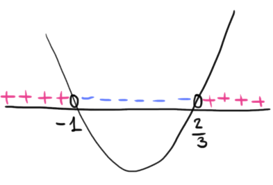
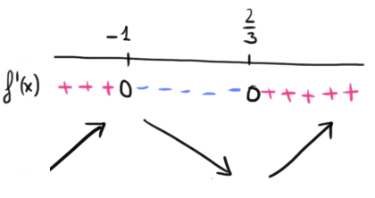

Se \(f\) è una funzione continua in \([a\,,\,\,b]\) e negli estremi dell'intervallo
assume valori di segno opposto, allora esiste almeno una valore \(c \in (a\,,\,\,b)\) tale che \(f(c) = 0\)
Esercizio
Individuare gli intervalli di monotonia della funzione
\[
f(x) = 2x^3 + x^2 - 4x + 10
\]
Svolgimento
Individuiamo gli intervalli di monotonia della funzione
\[
f(x) = 2x^3 + x^2 - 4x + 10
\]
Dominio, continuità e derivabilità
La funzione è polinomiale, quindi è definita, continua e derivabile in tutto \(\mathbb{R}\).
La derivata della funzione è
\[
f'(x) = 6x^2 + 2x - 4
\]
Studiamo il segno della derivata.
\[
\begin{align*}
&f'(x) \gt 0
\\\\
&6x^2 + 2x - 4 \gt 0
\\\\
&\text{dividiamo i coefficienti per 2}
\\\\
&3x^2 + x - 2 \gt 0
\end{align*}
\]
Utilizziamo il metodo della parabola per risolvere questa disequazione.
L'equazione associata ha soluzioni
\[
\begin{align*}
&x = \dfrac{-1 \pm \sqrt{1 -4\cdot 3 \cdot (-2)}}{6} =
\\\\
&x = -1 \quad \text{oppure} \quad x = \dfrac{2}{3}
\end{align*}
\]
Poiché il coefficiente di \(x^2\) è positivo la parabola è

Dal segno di \(f'(x)\) deduciamo il seguente schema di monotonia

La funzione è
crescente negli intervalli \((-\infty\,,\,\,-1)\) e
\(\left(\dfrac{2}{3}\,,\,\,+\infty\right)\)
Rappresentare il grafico di una funzione \(f\) che abbia
Derivata positiva se \(x \in (-\infty\,,\,\,0) \cup (4\,,\,\,+\infty)\)
Derivata negativa se \(x \in (0\,,\,\,4)\)
Derivata nulla se \(x = -3\), \(\,x = 0\,\) oppure \(\,x = 4\)
Esercizio
Consideriamo la funzione
\[
y = x + ln(x)
\]
Verificare che la funzione soddisfa l'equazione
\[
y'\cdot x -x -1 = 0
\]
Svolgimento
Sostituiamo il membro destro della funzione
\[
\color{red}{}y \color{black}{} = \color{red}{}x + ln(x)
\]
nella uguaglianza
\[
\color{red}{}y\color{black}{}'\cdot x -x -1 = 0
\]
Abbiamo
\[
\begin{align*}
&\color{red}{}\left(x + ln(x)\right)\color{black}{}'\cdot x -x -1 = 0
\\\\
&(1 +\dfrac{1}{x}) \cdot x - x - 1 = 0
\\\\
&x + 1 - x - 1 = 0
\\\\
&0 = 0
\end{align*}
\]
Abbiamo così verificato che la funzione assegnata dal testo soddisfa l'uguaglianza sopra indicata.
Osservaizone a margine
In questo esercizio la legge analitica ci viene fornita dal testo ed il nostro compito è
solamente quello di
controllare che essa soddisfi l'uguaglianza assegnata.
Immaginate se invece ci fosse stato chiesto:
Trovare una funzione \(f\) tale che sia soddisfatta l'uguaglianza \(\,\,y'\cdot x -x
-1 = 0\)
Questo tipo di problema è il culmine dell'analisi matematica e si chiama equaizone
differenziale.
Esercizio
Studiare gli intervalli di monotonia della funzione
\[
f(x) = e^{\frac{2x^2 + 6}{x - 1}}
\]
Soluzione:
Il grafico della funzione è il seguente